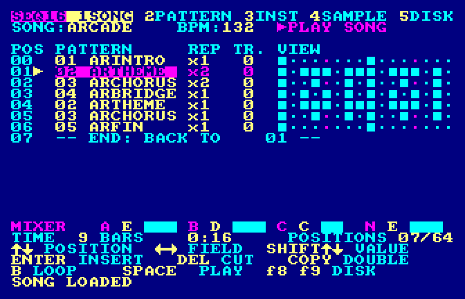
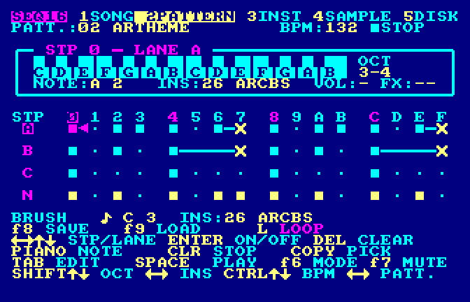
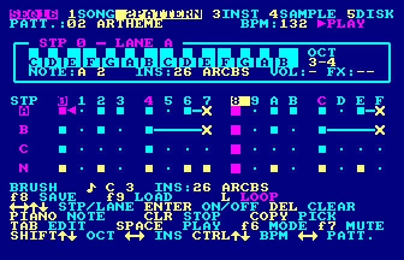
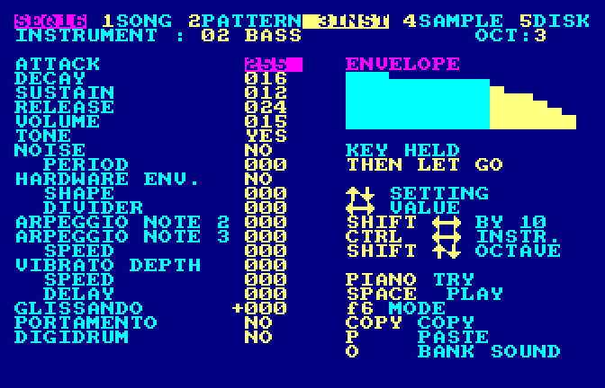

USER MANUAL
SEQ-16 manual
Every panel and every key of SEQ-16, with the texts exactly as the English disk (seq16-en.dsk) shows them.
Texts in yellow, like LOOP, are the ones on the CPC screen. Keys are drawn like keyboard keys: CTRL + ←/→ means: hold CTRL and press the left or right arrow.
Starting and quitting
- Put
seq16-en.dskin the drive (or in an emulator set to CPC 6128). - Type
RUN"SEQ16then RETURN. The loading screen shows, then the program starts on the PATTERN panel with SYNTH, the factory synthwave song (also on the disk as SYNTH.SNG). - Pick a panel with the function keys on the numeric keypad: 1SONG 2PATTERN 3INST 4SAMPLE 5DISK. In every panel, f8 saves and f9 loads.
To quit, hold ESC for one second. A single press is not enough, so you cannot lose your work by mistake.
The default sounds stay inside the program: at startup and after a new song, you always get the same 32 instruments. Instruments 25 to 28 (USER1 to USER4) are free; 29 to 32 are the factory digidrums (DGKICK, DGSNAR, DGHAT, DGCLAP).
To discover the program, the demo disk holds two complete songs: ARCADE (no samples, layered sound, all 7 effects) and STUDIO (sampled drums and voice). Panel f1, f9, pick the song, then SPACE.
f1 · SONG, the song
A song chains up to 64 positions. Each line gives the position, the pattern and its name, the repeats (REP, 1 to 16), the transposition (TR., −12 to +12 semitones, not the noise) and a view of the steps. The ► marker follows the played position, ↑ marks the start of the loop; the -- END: BACK TO line closes the list.
At the bottom, MIXER sets the volume of each voice (saved with the song) and TIME gives the song length. On the PATTERN panel, the song does not move on: the displayed pattern loops; back in SONG, the song carries on.

| Keys | On screen | Action |
|---|---|---|
| ↑/↓ | POSITION | pick a position (below the END line: the mixer) |
| ←/→ | FIELD | pick a field: pattern, repeats, transposition (in the mixer: the voice) |
| SHIFT + ↑/↓ | VALUE | change the value (in the mixer: the voice volume) |
| ENTER | INSERT | insert a position |
| DEL | CUT | remove the position |
| COPY | DOUBLE | double the position |
| B | LOOP | the loop starts here; on the loop position, B removes it: playback then stops at the end of the song |
| SPACE | PLAY | play the song from the cursor / stop |
| f8 / f9 | DISK | save / load a .SNG song |
A pattern's name is the name of its .PAT file: it shows in SONG and on the PATTERN panel's status line.
f2 · PATTERN, the sequencer
At the top, the status line: the pattern number and name (PATT.:), the tempo and the state. Below, the step panel: the cursor's step and voice, a 2-octave keyboard, and the cell's note, instrument, volume and effect (FX:).
The grid: voices A, B, C and N (noise) over 16 steps. A held note is drawn as a line up to its stop; a muted voice shows in pale yellow. In layered-sound mode, a single line plays a layered sound on the 4 voices, and its layers show under the grid.

| Keys | On screen | Action |
|---|---|---|
| ←/→ ↑/↓ | STP/LANE | move the cursor; you hear the note you land on |
| Piano keys | NOTE | put a note with the brush instrument, hear it, move to the next step |
| ENTER | ON/OFF | turn the cell on with the brush, or off |
| DEL | CLEAR | clear the cell |
| CLR | STOP | note stop |
| COPY | PICK | the cell becomes the brush (note and instrument) |
| TAB | EDIT | edit the step panel: ←/→ picks NOTE, INS, VOL then the two FX digits, ↑/↓ changes the value |
| CAPS LOCK | LOCKED | lock the brush instrument |
| SPACE | PLAY | play / stop |
| L | LOOP / ONCE | the pattern repeats, or plays only once |
| f6 | MODE | split voices / layered sound |
| f7 | MUTE | mute (or unmute) the cursor's voice |
| SHIFT + ↑/↓ | OCT | input octave |
| SHIFT + ←/→ | INS | brush instrument (and the note under the cursor) |
| CTRL + ↑/↓ | BPM | tempo in BPM |
| CTRL + ←/→ | PATT. | previous / next pattern (32 patterns); the music goes on |
| f8 / f9 | SAVE LOAD | save / load the displayed pattern (.PAT) |


f3 · INST, instruments and layered sounds
The instrument number and name (INSTRUMENT :), the test octave, the settings on the left and the ENVELOPE drawing on the right, updated on every change of attack, decay, sustain or release. Changing instrument only rewrites the values that change.

| Keys | On screen | Action |
|---|---|---|
| ↑/↓ | SETTING | pick a setting |
| ←/→ | VALUE | change its value |
| SHIFT + ←/→ | BY 10 | change the value by 10 |
| CTRL + ←/→ | INSTR. | previous / next instrument (32 instruments) |
| SHIFT + ↑/↓ | OCTAVE | test octave |
| Piano keys | TRY | try the instrument |
| SPACE | PLAY | hear the pattern with the changed sound |
| f6 | MODE | switch to the layered sounds |
| COPY | COPY | copy the instrument (settings and name) |
| P | PASTE | paste: the copied instrument replaces the displayed one |
| O | BANK SOUND | take one sound from an .INS bank: the bank, then one of its 32 sounds |
| f8 / f9 | save / load an .INS instrument bank |
Settings
| Setting | Values |
|---|---|
| ATTACK | 0 – 255 |
| DECAY | 0 – 255 |
| SUSTAIN | 0 – 15 |
| RELEASE | 0 – 255 |
| VOLUME | 0 – 15 |
| TONE | YES / NO |
| NOISE | YES / NO |
| PERIOD | 0 – 31 |
| HARDWARE ENV. | YES / NO |
| SHAPE | 8 – 15 |
| DIVIDER | 0 – 7 |
| ARPEGGIO NOTE 2 | 0 – 24 |
| ARPEGGIO NOTE 3 | 0 – 24 |
| SPEED | 1 – 15 |
| VIBRATO DEPTH | 0 – 6 |
| GLISSANDO | signed value (+008) |
| PORTAMENTO | YES / NO |
| DIGIDRUM | YES / NO |
The DIGIDRUM setting (the last one): set to YES, the instrument plays a sample instead of a note; the PERIOD line becomes SAMPLE followed by the sample's name. See Digidrums.
Layered sounds (f6)
A layered sound plays up to 4 instruments at once, one per voice, from a single note. LAYERS, SOUND S shows its 4 voices: the instrument (--: voice not used, or 01 to 32), the shift (−24 to +24 semitones; for voice N, the noise period BR00 to BR1F) and the volume (-: the instrument's, or 0 to 15).
The same table shows under the PATTERN grid in layered-sound mode.

| Keys | On screen | Action |
|---|---|---|
| ↑/↓ | SETTING | pick a field: for each voice, the instrument, the shift, the volume |
| ←/→ | VALUE | change its value (with SHIFT: by 10) |
| CTRL + ←/→ | LAY | previous / next layered sound (S1 to S8) |
| Piano keys | TRY | try the layered sound |
f4 · SAMPLE

The sample bank on the left (BANK :, MEMORY :), the chosen sample's SETTINGS on the right. The first time you open SAMPLE, the DRUMS.SMP bank loads by itself. Here, the STUDIO song's bank, with the SEQ16 voice.
| Keys | On screen | Action |
|---|---|---|
| SPACE | LISTEN | hear the chosen sample (again: stop) |
| Piano keys | PITCH | the sample higher or lower (±12 semitones) |
| ↑/↓ | SETTING | pick a setting: frequency, decimation, bits, curve |
| ←/→ | VALUE | change its value (with SHIFT: the frequency by 10) |
| CTRL + ←/→ | SAMPLE | previous / next sample |
| O | f8 SAVE f9 LOAD O TAKE 1 SAMPLE | take a sample from another bank (16 samples and 16 KB at most) |
| f8 / f9 | save the bank (settings and added samples included) / load another .SMP bank |
| CURVE | Effect |
|---|---|
| LOG | the faithful rendering |
| LINEAR | hollower and distorted |
| CLIPPED | the signal ×2.5, clipped |
| FOLDED | the signal ×2.5, folded |
| INVERTED | the waveform flipped |
While a sample plays, the screen does not respond: the processor does nothing but play the sample, with interrupts off.
f5 · DISK, the catalogue
The disk catalogue, by file type: songs, patterns, instruments, samples. At the top, the free space and the number of files; under the list, the chosen file and the panel ENTER loads it into.
Saving with f8 (in any panel): type the name (8 letters or digits at most) on the message line, then RETURN; ESC cancels. If the file already exists, a second RETURN replaces it.

| Keys | On screen | Action |
|---|---|---|
| ←/→ ↑/↓ | CHOOSE | pick a file |
| TAB | TYPE | next type: SNG, PAT, INS, SMP |
| ENTER | LOAD | load the file into its panel, which then shows |
| DEL | DELETE | delete the file (twice) |
| COPY | RENAME | rename the file |
| N | NEW | new song (twice) |
| C | RELOAD | read the disk again (after changing it) |
| SPACE | hear the pattern | |
| f8 | SAVE THE SONG (.SNG) | save the song |
Per-step effects (FX)
Every cell of a pattern can carry an effect, written in hexadecimal: the first digit picks the effect, the second its strength x (0 to F); --: no effect.
| FX | Effect | What happens | Example |
|---|---|---|---|
1x | UP | the note slides up | 14 |
2x | DOWN | the note slides down | 2C |
3x | ARPEG. | the note, then the note + x semitones | 37 |
4x | REPEAT | the note plays again every x frames (1/50 s) | 43 |
5x | CUT | the note is released after x frames | 52 |
6x | DELAY | the note starts x frames after the step | 62 |
7x | VIBRATO | vibrato of depth x | 73 |
- On the PATTERN panel, put the cursor on the cell, then TAB.
- Move to the FX with → (the effect digit, then the strength digit) and change it with ↑/↓: the effect's name shows on the message line.

In layered sound, the effect applies to all the voices of the sound; REPEAT, CUT and DELAY also work on the noise voice. CUT on a digidrum shortens the sample (52 on a KICK: 40 ms instead of 148), so the music loses fewer steps. The ARCADE song on the demo disk uses all 7 effects.
Files and messages
| File | Content | Panel |
|---|---|---|
.SNG | the whole song: 32 patterns and their names, 32 instruments, 8 layered sounds, mixer, chain, and the sample bank it uses | SONG, DISK |
.PAT | one pattern: mode, tempo, 16 steps | PATTERN |
.INS | 32 instruments, their names and the 8 layered sounds | INST |
.SMP | a sample bank (16 at most, 16 KB at most) and their settings | SAMPLE |
A .SNG carries its sample bank: you can copy it to another disk without forgetting anything. Songs in older formats still load; if a file with the same name exists, AMSDOS keeps the old one as .BAK.
Messages
| Message | Meaning |
|---|---|
| SONG AND SAMPLE BANK LOADED | the song and its sample bank are loaded |
| DISK ERROR (DISK? NAME?) | no disk, or no file with that name; followed by the AMSDOS error code and the number of bytes read |
| THIS FILE IS NOT A SEQ-16 SONG | the file is not a SEQ-16 .SNG |
| N AGAIN: ERASE EVERYTHING? | press N again to start a new song |
| DEL AGAIN: DELETE THIS FILE | press DEL again to delete the file |
| ARROWS THEN RETURN (ESC: CANCEL) | a file list is open |
| NO FILE OF THIS TYPE ON THE DISK | no file of the right type on the disk |
| BANK TOO BIG FOR MEMORY | the .SMP bank does not fit in memory |
| BANK ALREADY HAS 16 SAMPLES | key O in SAMPLE: the bank is full |
| NOT ENOUGH MEMORY FOR SAMPLES | samples and digidrums are disabled; everything else works |
Sound banks
The disk holds 13 .INS instrument banks (416 sounds: drums, basses, leads, pads, arpeggios, effects, buzzer, keyboards, chiptune, percussion, slides, noises, and USINE, the default instruments) and 8 .SMP sample banks (DRUMS, VOIX, BATTERI2, PERCUS, EFFETS, BASSES, NOTES, MOTS; the 9th, CHIFFRES, is on seq16-samples.dsk).
- Instruments: INST panel, f9 loads a whole bank, O takes a single sound, f8 saves your instruments.
- Samples: SAMPLE panel, f9 loads a bank, O takes a single sample, f8 saves the bank.
Every sound is synthesized or spoken by espeak: no sample taken from the Internet. The details of each bank are in the README.
Samples, step by step
The CPC has no digital-to-analogue converter: it plays a sample by changing the volume of an AY channel very fast, on 16 levels. That is where the grain comes from, and the degradation is the goal.
- Open the sampler: f4. The first time,
DRUMS.SMPloads by itself. - Listen: CTRL + ←/→ picks a sample, SPACE plays it; the piano keys play it higher or lower.
- Dirty the sound: ↑/↓ picks a setting, ←/→ changes its value; listen again after each change.
- Change bank: f9, arrows, RETURN.
- Add a sample from another bank: O, the bank, then the sample.
- Save the bank, with its settings: f8.
- Make your own sounds on the PC from WAVs, with the SAMPLES SEQ-16 tab of CPC DISK or
tools/wav2smp.py.
A bank holds 16 KB at most (about 4 seconds at 8 kHz) and 16 sounds at most.
Digidrums: samples in the song
A digidrum is an instrument that plays a sample from the loaded bank instead of a note. Factory instruments 29 to 32 play the 4 sounds of DRUMS.SMP.
- INST panel: set DIGIDRUM to YES.
- The PERIOD line becomes SAMPLE: pick the sample number (0 = the first one).
- VOLUME sets its strength. Put it like a note: C in octave 4 plays it at its original pitch, ±12 semitones.
The voice picks the AY channel (on voice N: channel C); a muted voice does not play its digidrums.
A sample takes the whole processor. While it plays, the screen does not respond, the sequencer stops and the other voices are frozen; afterwards, the tempo is caught up. With short sounds (under 150 ms) you can hardly hear it; a long sample cuts the other sounds while it plays. Changing sample (or pitch, or volume) also means preparing its tables, up to about 300 ms.
Known limits
- A CPC 6128 is required: the patterns are kept in the extra memory.
- Sample banks must fit in 16,064 bytes (about 4 seconds at 8 kHz), 16 samples at most.
- The file list only works on drive A.
- The firmware writes slowly (about 3.5 ms per character): a full screen takes more than a second to draw, but the music keeps time meanwhile.
- A small "click" at the start or end of a sample is possible.
Not there yet
- renaming instruments;
- copy / paste of step blocks;
- samples: tables kept in the extra memory, CHOPPED mode, SAMPLE panel finishing touches.
The full technical notes are in the repository README.